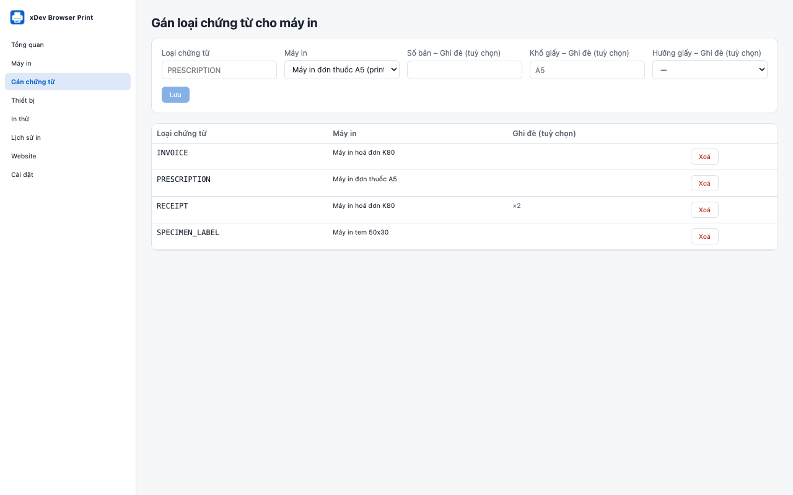

Mỗi loại chứng từ một máy in
Tạo cấu hình máy in cho khổ A4, A5, hoá đơn K80, K58 hoặc máy in mã vạch, tem nhãn, rồi gán từng loại chứng từ cho một cấu hình. Số bản, khổ giấy và hướng giấy có thể ghi đè theo từng lần gán.

xDev Browser Print
Tiện ích Chrome và SDK TypeScript giúp ứng dụng web của phòng khám, nhà thuốc, cửa hàng in đơn thuốc, hoá đơn, phiếu thu và tem nhãn đúng máy in đã gán cho từng loại chứng từ. Không cần backend, không cần ứng dụng cài thêm, không in qua dịch vụ đám mây.
Đang chờ Chrome Web Store duyệt
Miễn phí, mã nguồn mở theo giấy phép MIT. Không cần tài khoản. Không theo dõi.

Tính năng
Ứng dụng web gửi loại chứng từ, ví dụ PRESCRIPTION hoặc RECEIPT. Quản trị viên chỉ cần quyết định một lần máy in nào xử lý loại đó.
Tạo cấu hình máy in cho khổ A4, A5, hoá đơn K80, K58 hoặc máy in mã vạch, tem nhãn, rồi gán từng loại chứng từ cho một cấu hình. Số bản, khổ giấy và hướng giấy có thể ghi đè theo từng lần gán.
Chứng từ PDF và HTML mở hộp thoại in của Chrome, đã đặt sẵn khổ giấy và hướng giấy.
Máy in nhận lệnh RAW (ESC/POS, ZPL, TSPL) in trực tiếp qua WebUSB hoặc Web Serial, chỉ với thiết bị bạn đã cấp quyền ở màn hình Thiết bị.
Mỗi ứng dụng web được cho phép theo đúng địa chỉ, không dùng ký tự đại diện, và Chrome hỏi quyền truy cập riêng trang đó. Quyền theo từng trang: đọc cấu hình, in, sửa gán chứng từ. Có thể bật hỏi trước mỗi lần in.
HTML của trang được làm sạch và hiển thị trong khung sandbox. Mỗi trang có giới hạn số lệnh in và kích thước, và một yêu cầu lặp lại với cùng khoá không bị in hai lần.
Ứng dụng web kết nối, in PDF, HTML hoặc lệnh RAW, và theo dõi trạng thái từng lệnh in bằng SDK @tdduydev/browser-print hoặc hook useBrowserPrint.
Tổng quan, máy in, gán chứng từ, thiết bị, in thử, lịch sử in, website và cài đặt, bằng tiếng Việt và tiếng Anh.
Chrome không cho tiện ích liệt kê hay chọn máy in của hệ điều hành, và không báo người dùng đã in hay đã huỷ. PDF và HTML luôn qua hộp thoại in, trừ khi quản trị viên khởi động Chrome với cờ --kiosk-printing.
Quyền riêng tư
Tiện ích không tự gửi yêu cầu mạng nào. Không có máy chủ, không có tài khoản, không phân tích sử dụng, không quảng cáo, không theo dõi. Chứng từ chỉ đi tới máy in của bạn.
Đọc chính sách quyền riêng tưBắt đầu
Manifest V3, cho Google Chrome 118 trở lên trên Windows 10 và 11, macOS và Linux. Tiện ích đã gửi lên Chrome Web Store và đang chờ Google duyệt; trong lúc chờ, nhà phát triển có thể build từ mã nguồn và tải dạng giải nén (Load unpacked).
TypeScript, ESM và CommonJS, không phụ thuộc backend. Hook useBrowserPrint dùng với React 18 trở lên.
Tiện ích, SDK, ứng dụng React mẫu và tài liệu thiết kế có trên GitHub tại github.com/tdduydev/xdev-browser-print.
Tiện ích có tiếng Việt và tiếng Anh.
Hỗ trợ và pháp lý
Tiện ích làm gì với dữ liệu. Tóm lại: chứng từ ở lại trên máy tính của bạn.
Quyền riêng tưLiên hệ với chúng tôi và xem câu trả lời cho các câu hỏi thường gặp.
Hỗ trợCâu hỏi hoặc góp ý? Email duy@xdev.asia